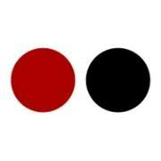

About
I am a Masters graduate (MASc.) in Electrical Engineering from the University of Toronto. I completed my undergraduate studies at the U of T as well. Contrary to the type of degree, my areas of interest are in Computer Engineering. I specialize in cloud computing, Software-Defined Networking (SDN) and cybersecurity. My Masters thesis was on design and implementation of secure and efficient cloud management systems. I worked as a Network Analyst at Bell Canada and interned as a Software Developer at Canada Health Infoway.
Interests
toys
Learn how technologies work. Likes to break stuff (created WiFi Jammers and Chromecast Jammers)
toys
Building simple Raspberry Pi and Arduino projects
toys
Playing chess and organized team sports including Flag-Football and Basketball
toys
Avid fan of Citizen Lab and EFF
toys
Playing chess and organized team sports including Flag-Football and Basketball
toys
Avid fan of Citizen Lab and EFF
News Articles
Team of 4, designed a Twitter-based tool to connect video content publishers and subscribers.
Created prototype in 3 days, won the challenge.
Univeristy of Toronto article on our research group.
Professional Work Experience

Backend Developer
FOOi Inc. (Feb. 2019 - Aug. 2019)
I was part of the technical team at a small FinTech Startup based in Toronto.
The main product of the startup is the mobile application that is responsible for peer-to-peer money transactions.
This is equivalent to Interac e-transfer, but on the mobile app instead of sending emails.
The sender and recipient can be anonymous and money can be loaded using debit and/or credit cards.
For more information, please visit: https://www.fooi.ca/
I was mainly responsible for the backend server functionalities such as:
chevron_right
Designed and developed REST APIs for implementing the money transactions and user interactions securely
chevron_right
Implemented functionalities to incorporate incentive program for the application
chevron_right
Created user interface using Vue.js for charities to send tax receipts for donors
chevron_right
Produced data intelligence reports using Google BigQuery to present application usage
chevron_right
Methodically resolved MySQL database migration issues during application upgrades
chevron_right
Designed and developed REST APIs for implementing the money transactions and user interactions securely
chevron_right
Implemented functionalities to incorporate incentive program for the application
chevron_right
Created user interface using Vue.js for charities to send tax receipts for donors
chevron_right
Produced data intelligence reports using Google BigQuery to present application usage
chevron_right
Methodically resolved MySQL database migration issues during application upgrades
Network Analyst
Bell Canada (Jan. 2015 - Aug. 2016)
I was part of the Small Data Intelligence Team, and my work consisted of two aspects: Data analytics and Application development.
I analyzed Bell's Wireline Internet data to report interesting usage trends. This provided some experience in data analytics and introduction to tools like Splunk and Deepfield.
Secondly, I built full stack web applications and deployed on production environments, as described below.
chevron_right
Bellmazon Cloud Management Application: Manage virtual machines in the Toronto-IP-Innovation-Centre (TIPIC) Lab Cloud patform.
chevron_right
End-to-End Monitoring Application: Help Network Operations Teams troubleshoot network outage issues by investigating connectivity links between customers and core networks.
chevron_right
Bell Customer Lookup: Tool to query customers based on the Bell user ID and network information. Due to privacy concerns, the source code is not posted.
Software Developer Intern
Canada Health Infoway (Aug. 2012 - Aug. 2013)
As my first professional experience in the industry, I interned as an Software Developer Intern at Canada Health Infoway (CHI). I was introduced to web application development from back-end server development using PHP and MySQL to front-end UI development like HTML, JavaScript, CSS and frameworks like Bootstrap. I also learnt how to write bug reports, answer questions on customer forums and address any IT issues in the work environment.
Teaching Assistant Experience
ECE361 Computer Networks
University of Toronto
chevron_right
Head Lab TA, designed and developed labs to complement course lecture material
chevron_right
Helped students with understanding of networking concepts on discussion board
chevron_right
Assisted students during labs in order to improve their learning experience
chevron_right
View Syllabus
ECE568 Computer Security
University of Toronto
chevron_right
Helped students with understanding of computer security fundamentals
chevron_right
Assisted students with Buffer Overflow exploits lab for course
chevron_right
Aided students with any difficulties during lab sessions
chevron_right
View Syllabus